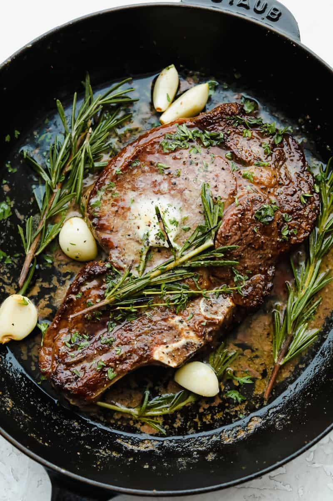

Ribeye Steak

Desciption:
A juicy steak.
Ingredients:
- ribeye steak
- thyme
- salt
- pepper
- garlic
- butter
- olive oil
Steps:
- Lightly coat pan with olive oil and heat on high until the pan begins to smoke
- Season steak with salt and pepper and place heated pan
- After about a minute of cooking, flip steak to uncooked side and begin basting
with butter, garlic, and thyme
- Remove steak from pan when it reaches an internal temperature of 135 farenheit,
and allow it to rest for ten minutes.